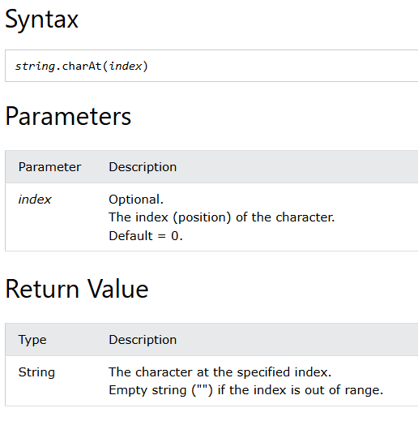
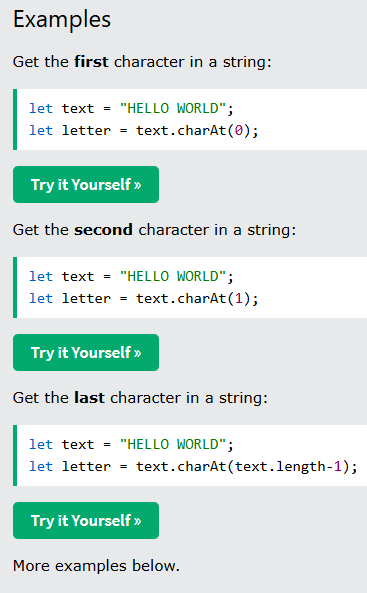

<style>pre {background-color:#aaa}</style>
<main style='padding-left:5%'>

<h1>Level 1 README</h1>
<ol>
<li>from <a href="https://www.w3schools.com">w3s</a> simplified.</li>
<li>from <a href="https://developer.mozilla.org/en-US/index">MDN</a> simplified.</li>
</ol>
<h2>charAt()</h2>
<ul>
<li><a href="https://www.w3schools.com/jsref/jsref_charat.asp">W3 Schools jsref charAt</a></li>
<li><a href="https://developer.mozilla.org/en-US/docs/Web/JavaScript/Reference/Global_Objects/String/charAt">MDN String.charAt</a></li>
</ul>
<h2>from w3s</h2>
<p>

</p>
<h2>String.prototype.charAt() - MDN</h2>
<p>The <strong><code>charAt()</code></strong> method returns a new string consisting of the single UTF-16 code unit at the given index.</p>
<iframe id='charat-iframe' title='charat iframe' width='500' height='500' src="http://localhost:22022/websites/interactive-examples.mdn.mozilla.net/pages/js/JavaScript Demo_ String.charAt().html">
</iframe>

<pre><code class="language-js">const sentence = &quot;The quick brown fox jumps over the lazy dog.&quot;;

const index = 4;

console.log(`The character at index ${index} is ${sentence.charAt(index)}`);
// Expected output: &quot;The character at index 4 is q&quot;
</code></pre>
<h2>Syntax</h2>
<pre><code class="language-js-nolint">charAt(index)
</code></pre>
<h3>Parameters</h3>
<ul>
<li><code>index</code><ul>
<li>: Zero-based index of the character to be returned. <a href="/en-US/docs/Web/JavaScript/Reference/Global_Objects/Number#integer_conversion">Converted to an integer</a> — <code>undefined</code> is converted to 0.</li>
</ul>
</li>
</ul>
<h3>Return value</h3>
<p>A string representing the character (exactly one UTF-16 code unit) at the specified <code>index</code>. If <code>index</code> is out of the range of <code>0</code> – <code>str.length - 1</code>, <code>charAt()</code> returns an empty string.</p>
<h2>Description</h2>
<p>Characters in a string are indexed from left to right. The index of the first character is <code>0</code>, and the index of the last character in a string called <code>str</code> is <code>str.length - 1</code>.</p>
<p><code>charAt()</code> is very similar to using <a href="/en-US/docs/Web/JavaScript/Reference/Operators/Property_accessors#bracket_notation">bracket notation</a> to access a character at the specified index. The main differences are:</p>
<ul>
<li><code>charAt()</code> attempts to convert <code>index</code> to an integer, while bracket notation does not, and directly uses <code>index</code> as a property name.</li>
<li><code>charAt()</code> returns an empty string if <code>index</code> is out of range, while bracket notation returns <code>undefined</code>.</li>
</ul>
<h2>Examples</h2>
<h3>Using charAt()</h3>
<p>The following example displays characters at different locations in the string <code>&quot;Brave new world&quot;</code>:</p>
<pre><code class="language-js">const anyString = &quot;Brave new world&quot;;
console.log(`The character at index 0   is &#39;${anyString.charAt()}&#39;`);
// No index was provided, used 0 as default

console.log(`The character at index 0   is &#39;${anyString.charAt(0)}&#39;`);
console.log(`The character at index 1   is &#39;${anyString.charAt(1)}&#39;`);
console.log(`The character at index 2   is &#39;${anyString.charAt(2)}&#39;`);
console.log(`The character at index 3   is &#39;${anyString.charAt(3)}&#39;`);
console.log(`The character at index 4   is &#39;${anyString.charAt(4)}&#39;`);
console.log(`The character at index 999 is &#39;${anyString.charAt(999)}&#39;`);
</code></pre>
<p>These lines display the following:</p>
<pre><code class="language-plain">The character at index 0   is &#39;B&#39;

The character at index 0   is &#39;B&#39;
The character at index 1   is &#39;r&#39;
The character at index 2   is &#39;a&#39;
The character at index 3   is &#39;v&#39;
The character at index 4   is &#39;e&#39;
The character at index 999 is &#39;&#39;
</code></pre>
<h2>Specifications</h2>
<p>{{Specifications}}</p>
<ul>
<li><a href="https://mathiasbynens.be/notes/javascript-unicode">JavaScript has a Unicode problem</a> by Mathias Bynens (2013)</li>
</ul>
<h2>Object.entries()</h2>
<h3>From W3S</h3>
<ol>
<li><a href="https://www.w3schools.com/jsref/jsref_object_entries.asp">Object.entries</a></li>
<li></li>
<li></li>
<li></li>
<li></li>
</ol>
<h3>From MDN Object.entries()</h3>
<p><a href="https://developer.mozilla.org/en-US/docs/Web/JavaScript/Reference/Global_Objects/Object/entries">Object.entries</a></p>
<p>The <strong><code>Object.entries()</code></strong> static method returns an array of a given object&#39;s own enumerable string-keyed property key-value pairs.</p>
<p>{{InteractiveExample(&quot;JavaScript Demo: Object.entries()&quot;)}}</p>
<iframe id='charat-iframe' title='charat iframe' width='500' height='500' src="http://localhost:22022/websites/interactive-examples.mdn.mozilla.net/pages/js/JavaScript Demo_ Object.entries().html">
</iframe>

<pre><code class="language-js">const object1 = {
  a: &quot;some string&quot;,
  b: 42,
};

for (const [key, value] of Object.entries(object1)) {
  console.log(`${key}: ${value}`);
}

// Expected output:
// &quot;a: some string&quot;
// &quot;b: 42&quot;
</code></pre>
<h2>Syntax</h2>
<pre><code class="language-js-nolint">Object.entries(obj)
</code></pre>
<h3>Parameters</h3>
<ul>
<li><code>obj</code><ul>
<li>: An object.</li>
</ul>
</li>
</ul>
<h3>Return value</h3>
<p>An array of the given object&#39;s own enumerable string-keyed property key-value pairs. Each key-value pair is an array with two elements: the first element is the property key (which is always a string), and the second element is the property value.</p>
<h2>Description</h2>
<p><code>Object.entries()</code> returns an array whose elements are arrays corresponding to the enumerable string-keyed property key-value pairs found directly upon <code>object</code>. </p>
<p>If you only need the property keys, use {{jsxref(&quot;Object.keys()&quot;)}} instead. If you only need the property values, use {{jsxref(&quot;Object.values()&quot;)}} instead.</p>
<h2>Examples</h2>
<h3>Using Object.entries()</h3>
<pre><code class="language-js">const obj = { foo: &quot;bar&quot;, baz: 42 };
console.log(Object.entries(obj)); // [ [&#39;foo&#39;, &#39;bar&#39;], [&#39;baz&#39;, 42] ]

const arrayLike = { 0: &quot;a&quot;, 1: &quot;b&quot;, 2: &quot;c&quot; };
console.log(Object.entries(arrayLike)); // [ [&#39;0&#39;, &#39;a&#39;], [&#39;1&#39;, &#39;b&#39;], [&#39;2&#39;, &#39;c&#39;] ]
</code></pre>
<h3>Iterating through an Object</h3>
<p>Using <a href="/en-US/docs/Web/JavaScript/Reference/Operators/Destructuring#array_destructuring">array destructuring</a>, you can iterate through objects easily.</p>
<pre><code class="language-js">// Using for...of loop
const obj = { a: 5, b: 7, c: 9 };
for (const [key, value] of Object.entries(obj)) {
  console.log(`${key} ${value}`); // &quot;a 5&quot;, &quot;b 7&quot;, &quot;c 9&quot;
}

// Using array methods
Object.entries(obj).forEach(([key, value]) =&gt; {
  console.log(`${key} ${value}`); // &quot;a 5&quot;, &quot;b 7&quot;, &quot;c 9&quot;
});
</code></pre>
<h2>Array.indexOf() from W3S</h2>
<ol>
<li><a href="https://www.w3schools.com/jsref/jsref_indexof_array.asp">indexOf</a></li>
<li></li>
<li></li>
<li></li>
<li></li>
</ol>
<h2>Array.prototype.indexOf() from MDN</h2>
<p><a href="https://developer.mozilla.org/en-US/docs/Web/JavaScript/Reference/Global_Objects/Array/indexOf">indexOf</a></p>
<p>The <strong><code>indexOf()</code></strong> method of {{jsxref(&quot;Array&quot;)}} instances returns the first index at which a
given element can be found in the array, or -1 if it is not present.</p>
<p>{{InteractiveExample(&quot;JavaScript Demo: Array.prototype.indexOf()&quot;)}}</p>
<iframe id='charat-iframe' title='charat iframe' width='500' height='500' src="http://localhost:22022/websites/interactive-examples.mdn.mozilla.net/pages/js/JavaScript Demo_ Array.indexOf().html">
</iframe>

<pre><code class="language-js">const beasts = [&quot;ant&quot;, &quot;bison&quot;, &quot;camel&quot;, &quot;duck&quot;, &quot;bison&quot;];

console.log(beasts.indexOf(&quot;bison&quot;));
// Expected output: 1

// Start from index 2
console.log(beasts.indexOf(&quot;bison&quot;, 2));
// Expected output: 4

console.log(beasts.indexOf(&quot;giraffe&quot;));
// Expected output: -1
</code></pre>
<h2>Syntax</h2>
<pre><code class="language-js-nolint">indexOf(searchElement)
indexOf(searchElement, fromIndex)
</code></pre>
<h3>Parameters</h3>
<ul>
<li><code>searchElement</code><ul>
<li>: Element to locate in the array.</li>
</ul>
</li>
<li><code>fromIndex</code> {{optional_inline}}<ul>
<li>: Zero-based index at which to start searching, <a href="/en-US/docs/Web/JavaScript/Reference/Global_Objects/Number#integer_conversion">converted to an integer</a>.<ul>
<li>Negative index counts back from the end of the array — if <code>-array.length &lt;= fromIndex &lt; 0</code>, <code>fromIndex + array.length</code> is used. Note, the array is still searched from front to back in this case.</li>
<li>If <code>fromIndex &lt; -array.length</code> or <code>fromIndex</code> is omitted, <code>0</code> is used, causing the entire array to be searched.</li>
<li>If <code>fromIndex &gt;= array.length</code>, the array is not searched and <code>-1</code> is returned.</li>
</ul>
</li>
</ul>
</li>
</ul>
<h3>Return value</h3>
<p>The first index of <code>searchElement</code> in the array; <code>-1</code> if not found.</p>
<h2>Description</h2>
<p>The <code>indexOf()</code> method compares <code>searchElement</code> to elements of the array using <a href="/en-US/docs/Web/JavaScript/Reference/Operators/Strict_equality">strict equality</a> (the same algorithm used by the <code>===</code> operator). <a href="/en-US/docs/Web/JavaScript/Reference/Global_Objects/NaN"><code>NaN</code></a> values are never compared as equal, so <code>indexOf()</code> always returns <code>-1</code> when <code>searchElement</code> is <code>NaN</code>.</p>
<h2>Examples</h2>
<h3>Using indexOf()</h3>
<p>The following example uses <code>indexOf()</code> to locate values in an array.</p>
<pre><code class="language-js">const array = [2, 9, 9];
array.indexOf(2); // 0
array.indexOf(7); // -1
array.indexOf(9, 2); // 2
array.indexOf(2, -1); // -1
array.indexOf(2, -3); // 0
</code></pre>
<p>You cannot use <code>indexOf()</code> to search for <code>NaN</code>.</p>
<pre><code class="language-js">const array = [NaN];
array.indexOf(NaN); // -1
</code></pre>
<h3>Finding all the occurrences of an element</h3>
<pre><code class="language-js">const indices = [];
const array = [&quot;a&quot;, &quot;b&quot;, &quot;a&quot;, &quot;c&quot;, &quot;a&quot;, &quot;d&quot;];
const element = &quot;a&quot;;
let idx = array.indexOf(element);
while (idx !== -1) {
  indices.push(idx);
  idx = array.indexOf(element, idx + 1);
}
console.log(indices);
// [0, 2, 4]
</code></pre>
<h2>Object.keys()</h2>
<ul>
<li><a href="https://www.w3schools.com/jsref/jsref_object_keys.asp">W3 Schools jsref charAt</a></li>
<li><a href="https://developer.mozilla.org/en-US/docs/Web/JavaScript/Reference/Global_Objects/Object/keys">MDN Object.keys</a></li>
</ul>
<iframe id='charat-iframe' title='charat iframe' width='500' height='500' src="http://localhost:22022/websites/interactive-examples.mdn.mozilla.net/pages/js/JavaScript Demo_ Object.keys().html">
</iframe>

<h2>Array.lastIndexOf()</h2>
<ul>
<li><a href="https://www.w3schools.com/jsref/jsref_lastindexof_array.asp">W3 Schools array lastIndexOf</a></li>
<li><a href="https://developer.mozilla.org/en-US/docs/Web/JavaScript/Reference/Global_Objects/Array/lastIndexOf">MDN Array.lastIndexOf</a></li>
<li><a href="https://developer.mozilla.org/en-US/docs/Web/JavaScript/Reference/Global_Objects/String/lastIndexOf">MDN String.lastIndexOf</a></li>
</ul>
<iframe id='charat-iframe' title='charat iframe' width='500' height='500' src="http://localhost:22022/websites/interactive-examples.mdn.mozilla.net/pages/js/JavaScript Demo_ String.lastIndexOf().html">
</iframe>
<iframe id='charat-iframe' title='charat iframe' width='500' height='500' src="http://localhost:22022/websites/interactive-examples.mdn.mozilla.net/pages/js/JavaScript%20Demo_%20Array.lastIndexOf().html">
</iframe>

<h2>Math.max()</h2>
<iframe id='charat-iframe' title='charat iframe' width='500' height='500' src="http://localhost:22022/websites/interactive-examples.mdn.mozilla.net/pages/js/JavaScript Demo_ Math.max().html">
</iframe>

<h2>Math.min()</h2>
<iframe id='charat-iframe' title='charat iframe' width='500' height='500' src="http://localhost:22022/websites/interactive-examples.mdn.mozilla.net/pages/js/JavaScript Demo_ Math.min().html">
</iframe>

<h2>repeat()</h2>
<iframe id='charat-iframe' title='charat iframe' width='500' height='500' src="http://localhost:22022/websites/interactive-examples.mdn.mozilla.net/pages/js/JavaScript Demo_ String.repeat().html">
</iframe>

<h2>Array.slice()</h2>
<iframe id='charat-iframe' title='charat iframe' width='500' height='500' src="http://localhost:22022/websites/interactive-examples.mdn.mozilla.net/pages/js/JavaScript Demo_ Array.slice().html">
</iframe>

<h2>String.includes()</h2>
<ol>
<li><a href="https://www.w3schools.com/jsref/jsref_includes.asp">string includes</a></li>
<li><a href="https://developer.mozilla.org/en-US/docs/Web/JavaScript/Reference/Global_Objects/String">string includes</a></li>
<li><a href="https://developer.mozilla.org/en-US/docs/Web/JavaScript/Reference/Global_Objects/String/includes">includes</a></li>
</ol>
<h2>String.includes() From W3S</h2>
<ol>
<li></li>
<li></li>
</ol>
<p>The <strong><code>includes()</code></strong> method of {{jsxref(&quot;String&quot;)}} values performs a case-sensitive search to determine whether a given string may be found within this string, returning <code>true</code> or <code>false</code> as appropriate.</p>
<!-- {{InteractiveExample("JavaScript Demo: String.prototype.includes()", "shorter")}} -->

<iframe id='charat-iframe' title='charat iframe' width='500' height='500' src="http://localhost:22022/websites/interactive-examples.mdn.mozilla.net/pages/js/JavaScript Demo_ String.includes().html">
</iframe>

<pre><code class="language-js">const sentence = &quot;The quick brown fox jumps over the lazy dog.&quot;;

const word = &quot;fox&quot;;

console.log(
  `The word &quot;${word}&quot; ${
    sentence.includes(word) ? &quot;is&quot; : &quot;is not&quot;
  } in the sentence`,
);
// Expected output: &quot;The word &quot;fox&quot; is in the sentence&quot;
</code></pre>
<h2>Syntax</h2>
<pre><code class="language-js-nolint">includes(searchString)
includes(searchString, position)
</code></pre>
<h3>Parameters</h3>
<ul>
<li><code>searchString</code><ul>
<li>: A string to be searched for within <code>str</code>. Cannot <a href="http://localhost:22022/websites/develper.mozilla.org/en-US/docs/Web/JavaScript/Reference/Global_Objects/RegExp#special_handling_for_regexes">be a regex</a>. All values that are not regexes are <a href="http://localhost:22022/websites/develper.mozilla.org/en-US/docs/Web/JavaScript/Reference/Global_Objects/String#string_coercion">coerced to strings</a>, so omitting it or passing <code>undefined</code> causes <code>includes()</code> to search for the string <code>&quot;undefined&quot;</code>, which is rarely what you want.</li>
</ul>
</li>
<li><code>position</code> {{optional_inline}}<ul>
<li>: The position within the string at which to begin searching for <code>searchString</code>. (Defaults to <code>0</code>.)</li>
</ul>
</li>
</ul>
<h3>Return value</h3>
<p><strong><code>true</code></strong> if the search string is found anywhere within the given string, including when <code>searchString</code> is an empty string; otherwise, <strong><code>false</code></strong>.</p>
<h3>Exceptions</h3>
<ul>
<li>{{jsxref(&quot;TypeError&quot;)}}<ul>
<li>: Thrown if <code>searchString</code> <a href="http://localhost:22022/websites/develper.mozilla.org/en-US/docs/Web/JavaScript/Reference/Global_Objects/RegExp#special_handling_for_regexes">is a regex</a>.</li>
</ul>
</li>
</ul>
<h2>Description</h2>
<p>This method lets you determine whether or not a string includes another string.</p>
<h3>Case-sensitivity</h3>
<p>The <code>includes()</code> method is case sensitive. For example, the following expression returns <code>false</code>:</p>
<pre><code class="language-js">&quot;Blue Whale&quot;.includes(&quot;blue&quot;); // returns false
</code></pre>
<p>You can work around this constraint by transforming both the original string and the search string to all lowercase:</p>
<pre><code class="language-js">&quot;Blue Whale&quot;.toLowerCase().includes(&quot;blue&quot;); // returns true
</code></pre>
<h2>Examples</h2>
<h3>Using includes()</h3>
<pre><code class="language-js">const str = &quot;To be, or not to be, that is the question.&quot;;

console.log(str.includes(&quot;To be&quot;)); // true
console.log(str.includes(&quot;question&quot;)); // true
console.log(str.includes(&quot;nonexistent&quot;)); // false
console.log(str.includes(&quot;To be&quot;, 1)); // false
console.log(str.includes(&quot;TO BE&quot;)); // false
console.log(str.includes(&quot;&quot;)); // true
</code></pre>
<h2>string.indexOf()</h2>
<iframe id='charat-iframe' title='charat iframe' width='500' height='500' src="http://localhost:22022/websites/interactive-examples.mdn.mozilla.net/pages/js/JavaScript Demo_ String.indexof().html">
</iframe>

<h2>string.lastIndexOf()</h2>
<iframe id='charat-iframe' title='charat iframe' width='500' height='500' src="http://localhost:22022/websites/interactive-examples.mdn.mozilla.net/pages/js/JavaScript Demo_ String.lastindexof().html">
</iframe>

<h2>Object.values()</h2>
<iframe id='charat-iframe' title='charat iframe' width='500' height='500' src="http://localhost:22022/websites/interactive-examples.mdn.mozilla.net/pages/js/JavaScript Demo_ Object.values().html">
</iframe>


<h2>References with links</h2>
<h3>Arrays</h3>
<ol>
<li><a href="https://www.w3schools.com/jsref/jsref_lastindexof_array.asp">array.lastindexof</a></li>
<li><a href="https://www.w3schools.com/jsref/jsref_lastindexof_array.asp">Array.</a></li>
<li><a href="https://www.w3schools.com/jsref/jsref_lastindexof_array.asp">Array.</a></li>
<li><a href="https://www.w3schools.com/jsref/jsref_lastindexof_array.asp">Array.</a></li>
<li><a href="https://www.w3schools.com/jsref/jsref_lastindexof_array.asp">Array.</a></li>
<li><a href="https://www.w3schools.com/jsref/jsref_lastindexof_array.asp">Array.</a></li>
<li><a href="https://www.w3schools.com/jsref/jsref_lastindexof_array.asp">Array.</a></li>
<li><a href="https://www.w3schools.com/jsref/jsref_lastindexof_array.asp">Array.</a></li>
<li><a href="https://www.w3schools.com/jsref/jsref_filter.asp">Array.filter</a></li>
<li><a href="https://www.w3schools.com/jsref/jsref_filter.asp">Array.</a></li>
<li><a href="https://www.w3schools.com/jsref/jsref_filter.asp">Array.</a></li>
<li><a href="https://www.w3schools.com/jsref/jsref_filter.asp">Array.</a></li>
<li><a href="https://www.w3schools.com/jsref/jsref_filter.asp">Array.</a></li>
<li><a href="https://www.w3schools.com/jsref/jsref_foreach.asp">Array.forEach</a></li>
<li><a href="https://www.w3schools.com/jsref/jsref_foreach.asp">Array.</a></li>
<li><a href="https://www.w3schools.com/jsref/jsref_foreach.asp">Array.</a></li>
<li><a href="https://www.w3schools.com/jsref/jsref_foreach.asp">Array.</a></li>
<li><a href="https://www.w3schools.com/jsref/jsref_map.asp">Array.map</a></li>
<li><a href="https://www.w3schools.com/jsref/jsref_map.asp">Array.</a></li>
<li><a href="https://www.w3schools.com/jsref/jsref_map.asp">Array.</a></li>
<li><a href="https://www.w3schools.com/jsref/jsref_map.asp">Array.</a></li>
<li><a href="https://www.w3schools.com/jsref/jsref_splice.asp">Array.splice</a></li>
<li><a href="https://www.w3schools.com/jsref/jsref_splice.asp">Array.</a></li>
<li><a href="https://www.w3schools.com/jsref/jsref_splice.asp">Array.</a></li>
</ol>
<h3>Objects</h3>
<ol>
<li><a href="https://www.w3schools.com/jsref/jsref_object_entries.asp">Object.entries</a></li>
<li><a href="https://www.w3schools.com/jsref/jsref_object_entries.asp">Object.</a></li>
<li><a href="https://www.w3schools.com/jsref/jsref_object_entries.asp">Object.</a></li>
<li><a href="https://www.w3schools.com/jsref/jsref_object_entries.asp">Object.</a></li>
<li><a href="https://www.w3schools.com/jsref/jsref_object_entries.asp">Object.</a></li>
<li><a href="https://www.w3schools.com/jsref/jsref_object_keys.asp">Object.keys</a></li>
<li><a href="https://www.w3schools.com/jsref/jsref_object_keys.asp">Object.</a></li>
<li><a href="https://www.w3schools.com/jsref/jsref_object_keys.asp">Object.</a></li>
<li><a href="https://www.w3schools.com/jsref/jsref_object_keys.asp">Object.</a></li>
</ol>
<h3>Strings</h3>
<ol>
<li><a href="https://www.w3schools.com/jsref/jsref_charat.asp">String.charAt</a></li>
<li><a href="https://www.w3schools.com/jsref/jsref_charat.asp">String.</a></li>
<li><a href="https://www.w3schools.com/jsref/jsref_charat.asp">String.</a></li>
<li><a href="https://www.w3schools.com/jsref/jsref_charat.asp">String.</a></li>
<li><a href="https://www.w3schools.com/jsref/jsref_trim_string.asp">String.trim</a></li>
<li><a href="https://www.w3schools.com/jsref/jsref_trim_string.asp">String.</a></li>
<li><a href="https://www.w3schools.com/jsref/jsref_trim_string.asp">String.</a></li>
<li><a href="https://www.w3schools.com/jsref/jsref_trim_string.asp">String.</a></li>
<li><a href="https://www.w3schools.com/jsref/jsref_trim_string.asp">String.</a></li>
<li><a href="https://www.w3schools.com/jsref/jsref_includes.asp">String.includes</a></li>
<li><a href="https://www.w3schools.com/jsref/jsref_includes.asp">String.</a></li>
<li><a href="https://www.w3schools.com/jsref/jsref_includes.asp">String.</a></li>
<li><a href="https://www.w3schools.com/jsref/jsref_includes.asp">String.</a></li>
<li><a href="https://www.w3schools.com/jsref/jsref_repeat.asp">String.repeat</a></li>
<li><a href="https://www.w3schools.com/jsref/jsref_repeat.asp">String.</a></li>
<li><a href="https://www.w3schools.com/jsref/jsref_repeat.asp">String.</a></li>
<li><a href="https://www.w3schools.com/jsref/jsref_repeat.asp">String.</a></li>
</ol>
<h2>MDN</h2>
<h3>Array</h3>
<ol>
<li><a href="https://interactive-examples.mdn.mozilla.net/pages/js/array-lastindexof.html">Array.lastIndexOf</a></li>
<li><a href="https://interactive-examples.mdn.mozilla.net/pages/js/array-lastindexof.html">Array.</a></li>
<li><a href="https://interactive-examples.mdn.mozilla.net/pages/js/array-lastindexof.html">Array.</a></li>
<li><a href="https://interactive-examples.mdn.mozilla.net/pages/js/array-lastindexof.html">Array.</a></li>
<li><a href="https://interactive-examples.mdn.mozilla.net/pages/js/array-lastindexof.html">Array.</a></li>
<li><a href="https://interactive-examples.mdn.mozilla.net/pages/js/array-lastindexof.html">Array.</a></li>
<li><a href="https://interactive-examples.mdn.mozilla.net/pages/js/array-lastindexof.html">Array.</a></li>
<li><a href="https://interactive-examples.mdn.mozilla.net/pages/js/array-lastindexof.html">Array.</a></li>
<li><a href="https://interactive-examples.mdn.mozilla.net/pages/js/array-lastindexof.html">Array.</a></li>
<li><a href="https://interactive-examples.mdn.mozilla.net/pages/js/array-lastindexof.html">Array.</a></li>
<li><a href="https://interactive-examples.mdn.mozilla.net/pages/js/array-lastindexof.html">Array.</a></li>
<li><a href="https://interactive-examples.mdn.mozilla.net/pages/js/array-indexof.html">Array.indexOf</a></li>
</ol>
<h3>String</h3>
<ol>
<li><a href="https://interactive-examples.mdn.mozilla.net/pages/js/string-repeat.html">String.repeat</a></li>
<li><a href="https://interactive-examples.mdn.mozilla.net/pages/js/string-repeat.html">String.</a></li>
<li><a href="https://interactive-examples.mdn.mozilla.net/pages/js/string-repeat.html">String.</a></li>
<li><a href="https://interactive-examples.mdn.mozilla.net/pages/js/string-repeat.html">String.</a></li>
<li><a href="https://interactive-examples.mdn.mozilla.net/pages/js/string-repeat.html">String.</a></li>
<li><a href="https://interactive-examples.mdn.mozilla.net/pages/js/string-repeat.html">String.</a></li>
<li><a href="https://interactive-examples.mdn.mozilla.net/pages/js/string-repeat.html">String.</a></li>
<li><a href="https://interactive-examples.mdn.mozilla.net/pages/js/string-includes.html">String.includes</a></li>
<li><a href="https://interactive-examples.mdn.mozilla.net/pages/js/string-repeat.html">String.</a></li>
<li><a href="https://interactive-examples.mdn.mozilla.net/pages/js/string-charat.html">String.charAt</a></li>
<li><a href="https://interactive-examples.mdn.mozilla.net/pages/js/string-repeat.html">String.</a></li>
</ol>
<h3>Math</h3>
<ol>
<li><a href="https://interactive-examples.mdn.mozilla.net/pages/js/math-min.html">Math.min</a></li>
<li><a href="https://interactive-examples.mdn.mozilla.net/pages/js/math-min.html">Math.</a></li>
<li><a href="https://interactive-examples.mdn.mozilla.net/pages/js/math-min.html">Math.</a></li>
<li><a href="https://interactive-examples.mdn.mozilla.net/pages/js/math-min.html">Math.</a></li>
<li><a href="https://interactive-examples.mdn.mozilla.net/pages/js/math-min.html">Math.</a></li>
<li><a href="https://interactive-examples.mdn.mozilla.net/pages/js/math-min.html">Math.</a></li>
<li><a href="https://interactive-examples.mdn.mozilla.net/pages/js/math-min.html">Math.</a></li>
<li><a href="https://interactive-examples.mdn.mozilla.net/pages/js/math-min.html">Math.</a></li>
</ol>
<h2>Object</h2>
<ol>
<li><a href="https://interactive-examples.mdn.mozilla.net/pages/js/object-entries.html">Object.entries</a></li>
<li><a href="https://interactive-examples.mdn.mozilla.net/pages/js/object-entries.html">Object.</a></li>
<li><a href="https://interactive-examples.mdn.mozilla.net/pages/js/object-entries.html">Object.</a></li>
<li><a href="https://interactive-examples.mdn.mozilla.net/pages/js/object-entries.html">Object.</a></li>
<li><a href="https://interactive-examples.mdn.mozilla.net/pages/js/object-entries.html">Object.</a></li>
<li><a href="https://interactive-examples.mdn.mozilla.net/pages/js/object-entries.html">Object.</a></li>
<li><a href="https://interactive-examples.mdn.mozilla.net/pages/js/object-entries.html">Object.</a></li>
<li><a href="https://interactive-examples.mdn.mozilla.net/pages/js/object-entries.html">Object.</a></li>
<li><a href="https://interactive-examples.mdn.mozilla.net/pages/js/object-entries.html">Object.</a></li>
<li><a href="https://interactive-examples.mdn.mozilla.net/pages/js/object-keys.html">Object.keys</a></li>
<li><a href="https://interactive-examples.mdn.mozilla.net/pages/js/object-values.html">Object.values</a></li>
<li><a href="https://interactive-examples.mdn.mozilla.net/pages/js/object-entries.html">Object.entries</a></main></li>
</ol>
